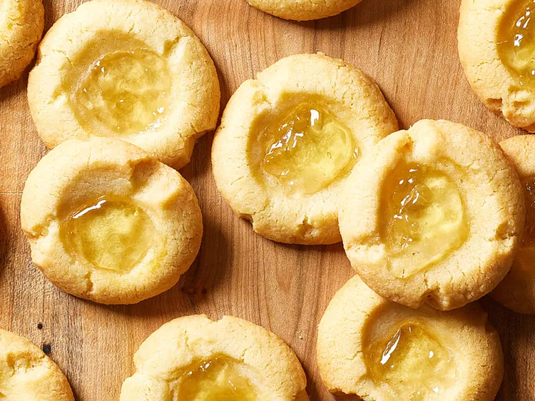

apple jelly
Home
Apple jelly is a sweet, firm preserve made primarily from apple juice, sugar, and pectin,
which gives it its gel-like, smooth texture.
It is a versatile spread, often served with toast or scones for breakfast,
and also used as a glaze for meats, a sweetener in sauces, or paired with cheese.
The process involves boiling apple juice, adding sugar and pectin,
and cooking the mixture until it reaches the gel point, then canning it for preservation.